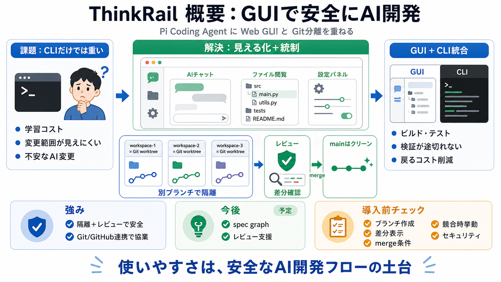

ThinkRail — the worktree IDE for the pi coding agent
Prebuilt: macOS (Apple Silicon), Linux arm64 + x64, Windows x64. Needs: `git` on PATH and an authenticated `pi` provide…

Pi Coding Agentのコマンドライン中心体験に、WebベースのGUIを重ねて使いやすさと安全性を両立します。 workspaceをGit worktree として分離し、レビュー後にのみ統合する設計が核です。
Piは拡張性が高い一方、初学者には学習コストと操作の分かりにくさが課題になりがちです。 その結果、作業が冗長になり「何が起きているか」が見えにくくなります。
ThinkRailはAIチャット、ファイル閲覧、設定パネル、Git/GitHub連携を視覚的に提供し、作業の取り回しを改善します。 さらに「Git運用を前提にした安全なAI開発フロー」を目指します。
ThinkRailの各作業セッションは、独立したGitブランチの worktree として動きます。 作業完了・レビュー後にのみ merge され、メインブランチはクリーンに保たれます。
AIの提案や変更は常に正しいとは限りません。 ブランチ分離により、失敗や不要な変更をメインに混ぜず、差分確認やロールバックも容易にします。
GUI内にCLIウィンドウを備え、ビルドやテストも同じ環境で扱える方針です。 チャットの見やすさだけで終わらず、検証工程への接続を作ります。
Git/GitHubと統合され、リアルタイムな協業をしやすくする点が強調されています。 ブランチ分離の設計と相性がよく、レビュー導線を作りやすい構図です。
近い将来、spec graphのような仕様中心の開発ガイドをAIの参照に組み込む構想があります。 またAI変更のコードレビュー支援も計画されています。
ThinkRailの要点は「workspaceの意味」「隔離の重要性」「GUIが学習をどう助けるか」「CLI統合」「spec graph/レビュー機能の提供状況」です。
workspaceをGit worktree として扱い、レビュー前の merge を抑止する前提は、AI変更を安全に運用する価値が高いです。 GUIでオンボーディングが改善され、CLIも統合されるため実作業へ無理なく接続し得ます。
説明は思想と狙い中心で、コードレビューGUIの実装レベルやspec graphの具体形式、レビュー導線の細部は読み取れません。 またcurl/PowerShellなどの実行インストールは、セキュリティ観点で透明性を別資料で確認する必要があります。
ThinkRailは「GUIによる生産性向上」だけでなく、Git前提のガバナンスでAI変更を安全に扱う開発フローを提供しようとしています。 導入前に、ブランチ作成・差分表示・merge条件・競合時挙動をローカルで確かめるのが賢明です。
Prebuilt: macOS (Apple Silicon), Linux arm64 + x64, Windows x64. Needs: `git` on PATH and an authenticated `pi` provide…
ThinkRail is a web-based GUI for Pi. It's an open source project, released under Apache 2.0 license, backed by JetBrains…
## Install ThinkRail ships as a single self-contained executable per platform. The installer downloads the right build …
the worktree IDE for the pi coding agent. ThinkRail — the worktree IDE for the pi coding agent. thinkrail.ai.
JetBrains products are designed as an open ecosystem for coding agents. Integrated options include Junie by JetBrains, O…